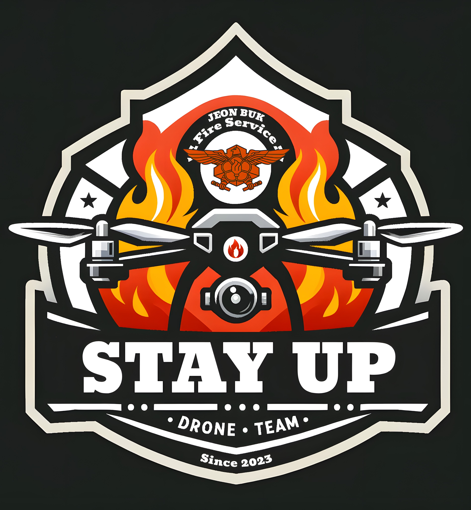
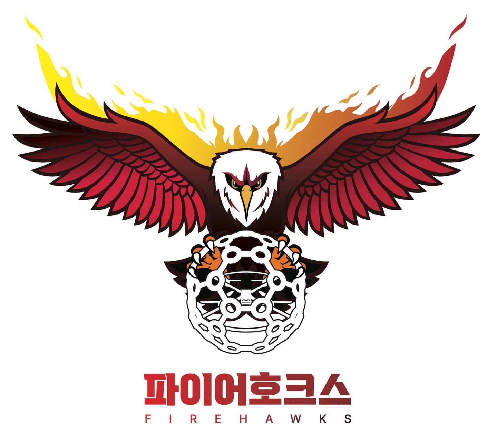

Stay Up World
전북소방드론팀 스테이업 통합 플랫폼
가장 높은 곳에서, 가장 먼저!
첨단 드론 기술로 도민의 안전을 지키는
전북소방드론팀 스테이업의
다양한 프로젝트를 만나보세요.

Stay-Up
전북소방드론팀 공식 홈페이지
전북소방드론팀 스테이업의 공식 홈페이지입니다. 팀 소개, 주요 임무, 활동 현황, 팀원 소개 등 종합적인 정보를 확인할 수 있습니다.
- 26명 정예 대원 소개
- 실시간 출동 통계
- 주요 임무 및 성과
- 팀 활동 갤러리

Firehawks
드론 축구팀 파이어호크스
전북소방드론팀 소속 드론 축구팀 파이어호크스입니다. 재난 현장의 정교함을 그라운드의 지배력으로 승화시키는 우리의 열정을 확인하세요.
- 7명 정예 선수단
- 전국 대회 참가 기록
- 훈련 영상 및 하이라이트
- 경기 일정 및 결과
AI 객체탐지
인공지능 객체 탐지 프로그램
최신 AI 기술을 활용한 실시간 객체 탐지 시스템입니다. 재난 현장에서의 효율적인 수색 및 구조 작업을 지원하는 첨단 기술을 체험해보세요.
- 실시간 객체 인식
- 다중 객체 동시 탐지
- 웹 기반 직관적 인터페이스
- 모바일 최적화 지원
소방장비 현황
RFID 기반 장비 관리 시스템
RFID 기술을 활용한 실시간 소방장비 현황 확인 시스템입니다. 장비의 위치, 상태, 사용 이력을 체계적으로 관리하고 추적할 수 있습니다.
- 실시간 장비 위치 추적
- 장비 상태 모니터링
- 사용 이력 관리
- 재고 현황 실시간 확인
소방업무 RAG 챗봇
AI 기반 소방업무 지원 시스템
소방 관련 규정, 절차, 매뉴얼을 학습한 AI 챗봇입니다. 현장 상황에서 신속한 정보 검색과 업무 지원을 제공하여 효율적인 의사결정을 돕습니다.
- 소방 규정 및 매뉴얼 검색
- 실시간 질의응답 지원
- 상황별 대응 절차 안내
- 업무 가이드라인 제공
음성 전사 프로그램
AI 음성인식 기반 문서화 시스템
현장 상황 보고 및 회의록을 음성으로 입력하여 자동으로 텍스트로 변환하는 시스템입니다. 신속한 기록 작성과 업무 효율성 향상을 지원합니다.
- 실시간 음성 인식 및 변환
- 자동 문장 부호 삽입
- 다양한 형식으로 내보내기
- 음성 파일 업로드 지원